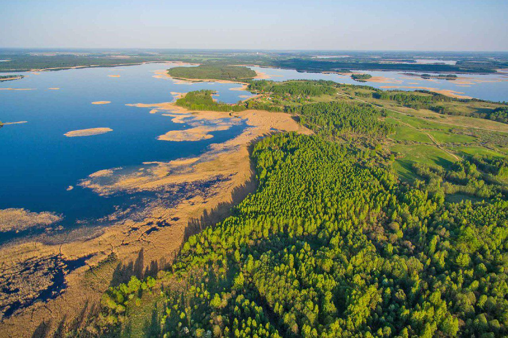

Гора Маяк – это самая известная и лучшая смотровая точка Браславских озёр.
Окрестности горы Маяк представляют собой комплекс камовых холмов площадью несколько десятков квадратных километров.
Все вместе они представляют собой Кезиковские горы
Вид с лучшей смотровой точки Браславских озер - Горы Маяк
 Городище деревни Масковичи принадлежит к памятникам археологии эпохи викингов.
Глядя на великолепный пейзаж, вдыхая свежий воздух, представляешь себе,
как к воротам городища подплывали на плоскодонках иноземные купцы с товарами,
а жители Брячиславля приобретали всякие «заморские» новинки.